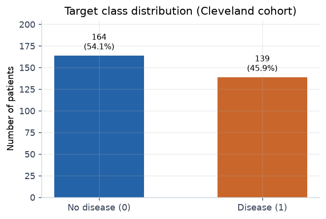
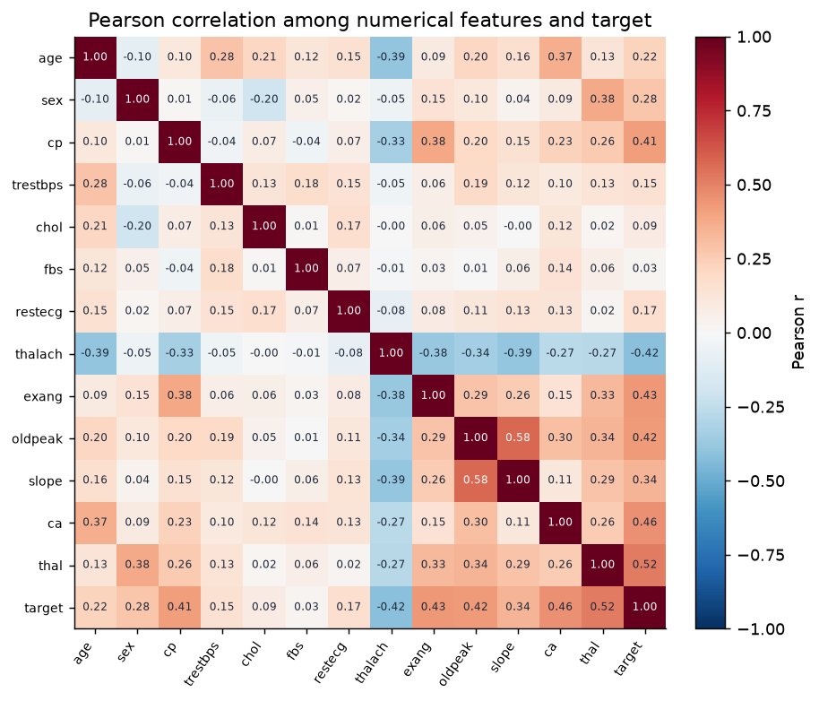
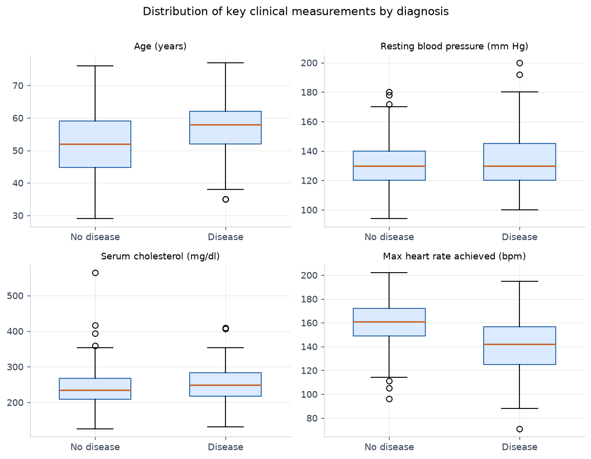
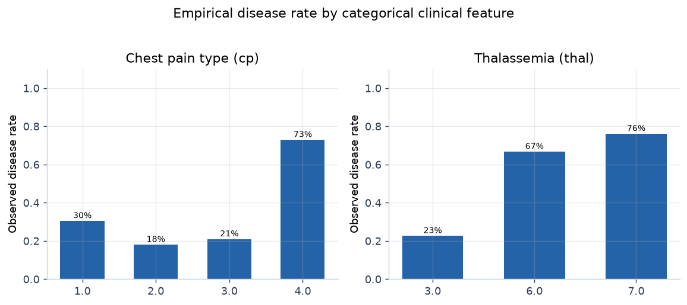
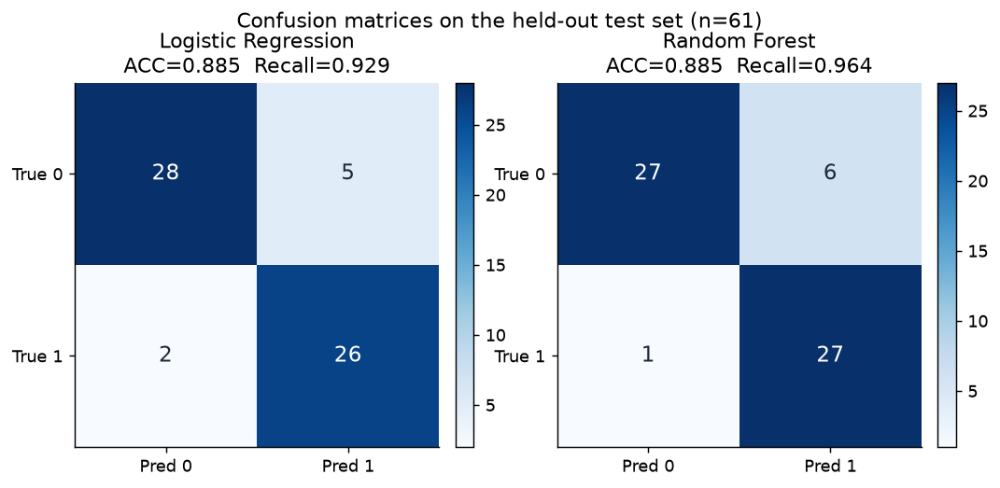
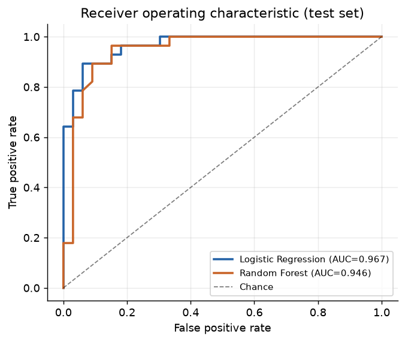
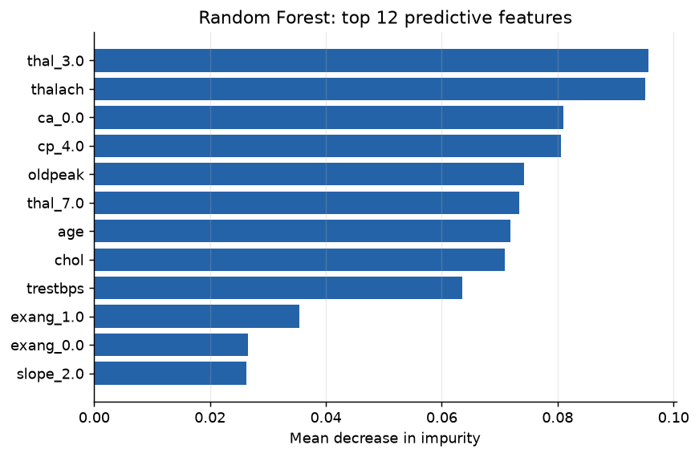
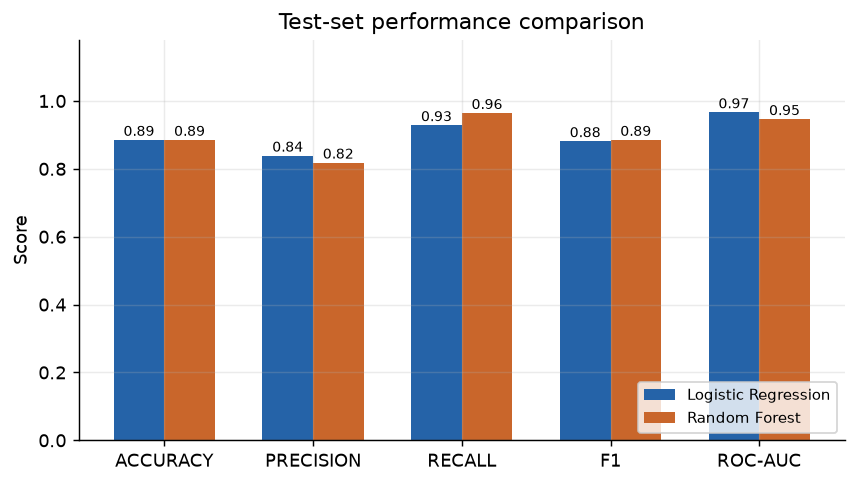

Analytical foundation
Reusable workflow: profile → clean → encode → split → train → evaluate → communicate.
Ruoqi Li (mc64260) · MSc Data Science — Marketing Analytics, University of Macau
This portfolio documents an end-to-end supervised-learning workflow: from data cleaning and exploratory analysis to feature engineering, classifier training, rigorous evaluation and decision-focused visual communication. The featured independent study applies the same classification pipeline used in the semester customer-churn project to a clinical risk-screening problem, with explicit attention to uncertainty and ethical limits.
The semester project frames customer attrition as a binary classification task: given behavioural, transactional and demographic attributes, predict whether a customer is likely to churn. It is the coursework context in which the core skills demonstrated here were first developed — Python data manipulation, missing-value treatment, exploratory data analysis, categorical encoding, model training and comparison, threshold-based evaluation, and translating model output into business recommendations.
Reusable workflow: profile → clean → encode → split → train → evaluate → communicate.
Recall–precision trade-offs were discussed in terms of retention-campaign cost.
The same pipeline is re-applied here to an independent clinical dataset.
A binary classifier that estimates the presence of heart disease from routine clinical measurements. The study targets risk stratification: identifying patients who warrant further diagnostic testing, not issuing a clinical diagnosis. The public UCI Heart Disease (Cleveland) dataset is used throughout, and every figure on this page is regenerated by the accompanying scripts.
Target: 1 = disease present (severity 1–4 in the source data),
0 = no disease. A stratified 80/20 split preserves class
balance (242 training / 61 test patients).
Age, sex, chest-pain type, resting blood pressure, serum cholesterol, fasting blood sugar, resting ECG, maximum heart rate, exercise-induced angina, ST depression, ST slope, vessel count (ca) and thalassemia (thal).
The raw file contained six missing markers (?) in ca
and thal; these were median-imputed. The classes are moderately
balanced, so accuracy alone would be misleading — recall and ROC-AUC are
reported alongside it. Correlation screening highlighted thalassemia,
vessel count, exercise-induced angina and ST depression as the strongest
individual signals, while cholesterol showed only a weak linear association.




Numerical features (age, resting blood pressure, cholesterol, maximum heart
rate, ST depression) were median-imputed and standardised. Categorical codes
(sex, chest pain, blood sugar, ECG, angina, slope, ca, thal) were
mode-imputed and one-hot encoded. All transformations live inside a
scikit-learn Pipeline, so the test set is never used to fit
imputers or scalers — a common source of optimistic results.
A regularised linear baseline with max_iter=2000. Chosen for
transparency: coefficient signs are directly interpretable as direction
of clinical association, which matters in a screening context.
300 trees, class_weight="balanced", fixed seed 42. Captures
non-linear interactions (for example age × maximum heart rate) and
supplies impurity-based feature importance for interpretation.
python src/run_all.py (seed 42).
| Model | Accuracy | Precision | Recall | F1 | ROC-AUC |
|---|---|---|---|---|---|
| Logistic Regression | 0.885 | 0.839 | 0.929 | 0.881 | 0.967 |
| Random Forest | 0.885 | 0.818 | 0.964 | 0.885 | 0.946 |
The two classifiers tie on accuracy, but their error profiles differ. Logistic Regression has the higher ROC-AUC (0.967 vs 0.946), indicating better ranking quality across thresholds, while the Random Forest achieves higher recall (0.964 vs 0.929) — it misses fewer true disease cases, which is the desirable bias for a screening tool. Its precision is correspondingly lower (0.818), meaning more false alarms that would need confirmatory tests.




Both classifiers achieve approximately 89% accuracy on unseen patients and clearly outperform chance, demonstrating that routine clinical variables carry strong predictive signal for heart-disease risk. For a screening application the Random Forest's higher recall is preferable, provided a confirmatory diagnostic step handles its additional false positives. The models are screening aids only: they cannot replace clinical judgement, and the 61-patient test set is too small to support claims about generalisation across hospitals, age groups or sexes. Subgroup fairness and calibration were not assessed and must be evaluated before any real deployment.
Source code, data and figures are openly available for inspection and replication.
Analysis scripts, dataset, requirements and full README with reproduction steps.
Static HTML/CSS source for this GitHub Pages site.
Student ID: mc64260
Email: Liruoqi.mc64260@um.edu.mo
GitHub: github.com/Liruoqi64260
A systematic approach to turning messy data into defensible conclusions: explicit assumptions, leakage-safe pipelines, metrics chosen to match the decision at hand, and visuals that communicate uncertainty rather than hide it.